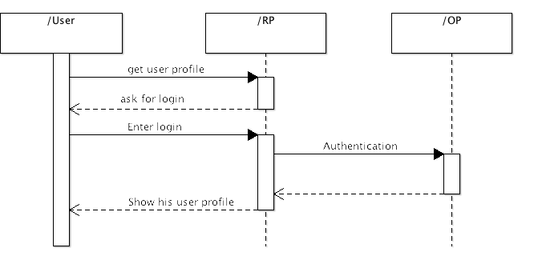
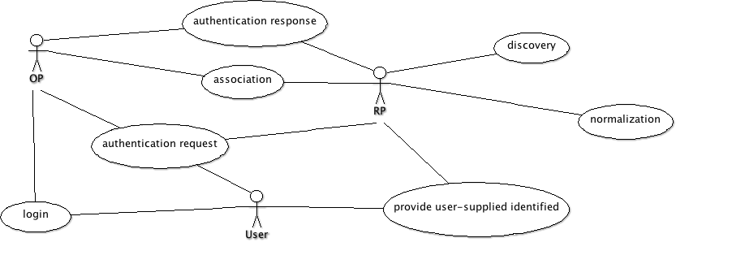
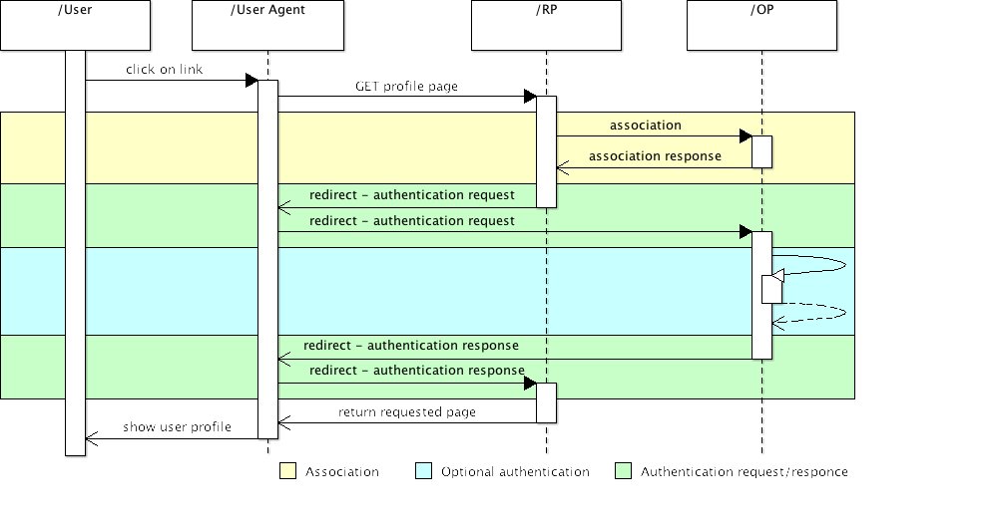

When user try to access some protected page as user profile on RP than RP have to get user's identity. RP ask user for entering some identifier. It could be OpendID of google email (when appropriate OpenID extension is used). Based on that identifier RP discover which server (OP) is responsible for managing this identity and ask this server (OP) to authenticate this identity. When OP positively authenticate user's identity than RP allows user to get requested page. This process in on next diagram.
Previously described use cases are here describe in more details.
Following diagram shows main use cases solved by library.
Use cases are described in order how they are invoked. OpenId protocol contain few other alternative flows but following one is most important.
It's key concept that allows user to get identity.
Following diagrams show situation when user access relaying party and provide his identification. Relaying party determine correct OpenId provider and redirect user there with authentication request. OpenId provider select corresponding user if this user is not logged in than ask for credential and perform login operation. Than OpenId provider create authentication response and send it back through redirect to relaying party. When relaying party get authentication response extract identity and verify signature with secret key.
